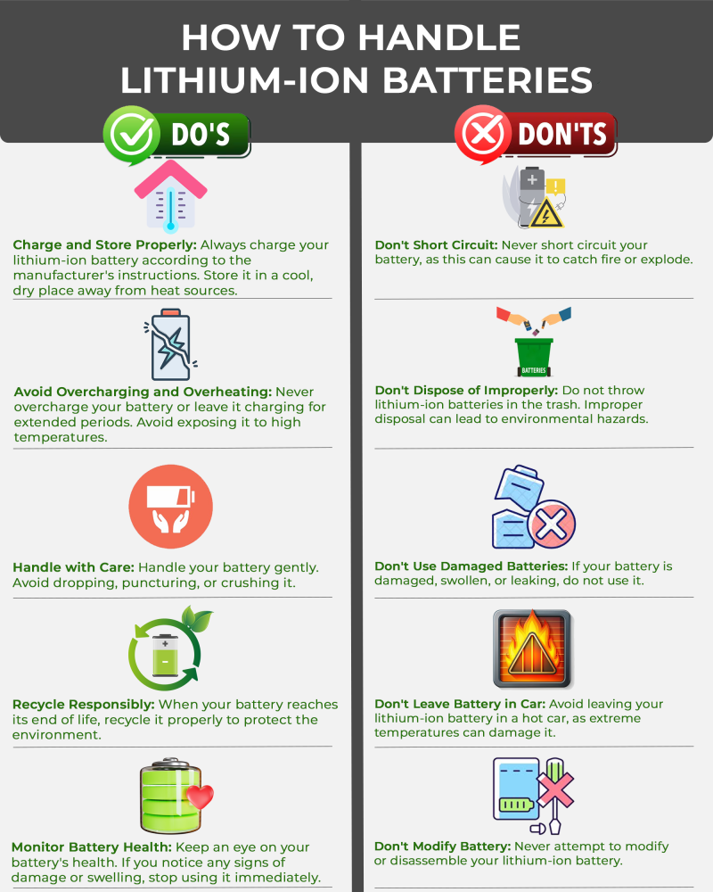

Lithium batteries have revolutionized the energy storage landscape, powering everything from smartphones and laptops to electric vehicles. Their high energy density, long cycle life, and fast charging capabilities make them a highly sought-after technology. However, like any other technology, they come with their own set of advantages and disadvantages.
Advantages of Lithium Batteries:
- High Energy Density: Lithium batteries offer the highest energy density among currently available battery types. This means they can store more energy in a smaller space, making them ideal for devices that require extended battery life, such as electric vehicles and portable electronics.
- High-Voltage Platform: The operating voltage of lithium batteries is relatively high, typically between 3.6 and 3.7 volts. This higher voltage allows for smaller currents to be drawn for the same power output, reducing energy loss and improving overall efficiency.
- Long Cycle Life: Lithium batteries are known for their longevity, capable of enduring hundreds to thousands of charge-discharge cycles. This translates to a longer lifespan compared to other battery types, reducing the need for frequent replacements.
- Fast Charging: Lithium batteries can be charged quickly, providing users with the convenience of recharging their devices in a short amount of time. This is particularly beneficial for applications where rapid energy replenishment is essential, such as electric vehicles.
- No Memory Effect: Unlike some older battery technologies, lithium batteries do not suffer from the memory effect, which requires users to fully discharge the battery before recharging. This freedom allows for more flexible charging habits.
- Environmental Friendliness: Lithium batteries are generally considered more environmentally friendly than other battery types, as they do not contain harmful heavy metals like mercury or lead. Additionally, the materials used in lithium batteries can be recycled, reducing the demand for raw materials and minimizing the environmental impact.

Disadvantages of Lithium Batteries:
- Safety Concerns: Lithium batteries can pose safety risks if not handled or managed properly. Under certain conditions, such as overheating or short circuits, they can experience thermal runaway, leading to explosions or fires. While manufacturers have implemented safety measures to mitigate these risks, it is essential to use lithium batteries responsibly and follow proper guidelines.
- Special Management and Treatment: Lithium batteries require specific care and maintenance. They should be protected from extreme temperatures, excessive charging and discharging, and physical damage. Proper disposal and recycling are also crucial to prevent environmental hazards.
- Limited Resource Supply: Lithium, the primary raw material for lithium batteries, has a limited supply. As the demand for lithium batteries continues to grow, especially for electric vehicles, there may be challenges in meeting the supply requirements. This has led to increased research and development efforts to explore alternative materials and improve the efficiency of lithium battery production and recycling.
In conclusion, lithium batteries offer significant advantages in terms of energy density, performance, and environmental friendliness. However, their safety concerns, special management requirements, and potential resource limitations need to be carefully considered. As technology advances, it is likely that these challenges will be addressed, further solidifying the position of lithium batteries as a cornerstone of modern energy storage solutions.